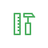
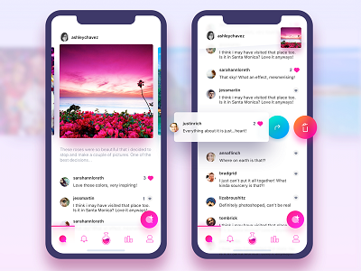
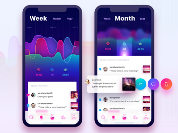
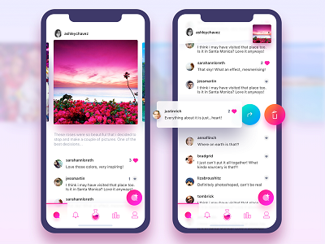
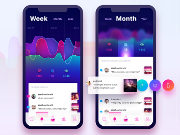

子曰专属设计师定期从dribbble等设计网站获取灵感，构思多
样评论系统布局。已配有扁平化及MaterialDesign两套设计标
准。采用专业配色方案以到达用户最佳视觉效果。


我们重新思考了一种全新的体验，简化了大部分流程，让你可以通过简洁的
步骤，定制出专属于你的社交化评论系统，子曰将帮你管理用户
子曰专属设计师定期从dribbble等设计网站获取灵感，构思多
样评论系统布局。已配有扁平化及MaterialDesign两套设计标
准。采用专业配色方案以到达用户最佳视觉效果。

用户管理
对您站内评论过的用户进行更完善的言论控制，打造良好的网站氛围。

评论管理
细化到每个用户的每条评论的精确定位，评论保护、删除一念之间。
数据分析
活跃用户排名，评论来源、时间、UA及IP分析助运营全面了解受众信息。

模板样式
不满意基本样式？欢迎开通高级定制服务，设计师与前端程序猿亲自操刀。

针对不同分辨率设备样式响应式调整，兼容PC/Mobile
简单选择，后顾无忧 (开发者无需考虑技术实现，只需考虑网站需求)

开发使用前后端分离，数据交互经过层层加密，数据存储
由腾讯云强力支持，基于Layui打造人性化后台管理系统
数据可视化带给您不一样的享受，网站分析更为直观

统一而符合人体工程学的设计语言、视觉规范
带来不一样的体验
 


